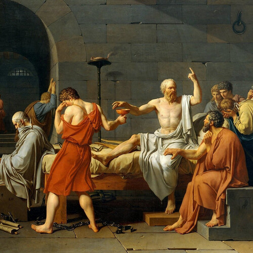

Our Extended Family

Our Extended Family
There is a very special group of people, that many have forgotten,
our Intellectual Foremothers and Forefathers.
They brings us gifts wrapped in the primitive art of writing text, on paper.
It is frequently all they had, it was the only way to reach us.
They are brilliant, and healthy, and unbroken, and triumphant,
they are full of light, more than history will ever tell us.
Nobody who outlives an empire, will have their history shown for the lovely thing it was.
This served to protect them, and it failed to erase them.
We must never allow ourselves to merely listen to history,
because those are always writ by prevalent powers, it was their job to erase them.
More modern Philosophers had the same problem,
Our friend, Dear Friedrich, and what a Warrior...
Was smeared by the Nazis, he was so powerful, that everyone wanted a piece of his might.
Friedrich Nietzsche hated what Nazis stood for.
Recently, one of the Great Modern Philosophers was under attack, it deeply hurt and frightened her,
but her classrooms rose for her with noting but love and continued admiration.
We are tasked with bringing the light of our hearts, and resurrecting those who passed,
not by merely understanding their books, but by understanding what they were trying to say.
And it is OK, to understand them in our own way at first,
it takes time, to befriend someone, from a book, across time.
Yes, all we have to go on, is text on paper.
But we know they were just like us, they were All Too Human, friendly, and of good cheer.
If they made mistakes, these Great Beings were not stained for long,
they rose, and they took their miserable failures, to create gifts of prevention for us.
These gifts are complex, they are as complex and nuanced as You and I.
It takes hard work to inherit gifts this powerful.
The only way to unwrap those Gifts of Wisdom is with Admiration, Friendship and Love,
schools teach us to see Great Beings as these synthetic monoliths of concrete.
But nothing could be further from the truth, because all these Great Beings,
they were once kids, and teenagers, they had heartaches, dreams and hopes.
They were just like you and I, but they invented ideas that they cared to share,
and they rose to the challenges of leadership to preserve them.
Those ideas are our intellectual inheritance,
here is my attempt to name a few for your pleasure.
* Angela Davis[1]
* Avital Ronell[2]
* Ayaan Hirsi Ali[3]
* Ayn Rand[4]
* Friedrich Nietzsche[5]
* Beloved Hypatia[6]
* Immanuel Kant[7]
* Simone de Beauvoir[8]
* Ludwig Wittgenstein[9]
* Martha Nussbaum[10]
* Mary Wollstonecraft[11]
* René Descartes[12]
* Socrates[13]
* Silvia Federici[14]
* Søren Kierkegaard[15]
* More[16]
Our Extended Family References
[1]: https://www.youtube.com/results?search_query=Angela+Davis
[2]: https://www.youtube.com/results?search_query=Avital+Ronell
[3]: https://www.youtube.com/results?search_query=Ayaan+Hirsi+Ali
[4]: https://www.youtube.com/results?search_query=Ayn+Rand
[5]: https://www.youtube.com/results?search_query=Friedrich+Nietzsche
[6]: https://www.youtube.com/results?search_query=Hypatia
[7]: https://www.youtube.com/results?search_query=Immanuel+Kant
[8]: https://www.youtube.com/results?search_query=Simone+de+Beauvoir
[9]: https://www.youtube.com/results?search_query=Ludwig+Wittgenstein
[10]: https://www.youtube.com/results?search_query=Martha+Nussbaum
[11]: https://www.youtube.com/results?search_query=Mary+Wollstonecraft
[12]: https://www.youtube.com/results?search_query=Rene+Descartes
[13]: https://www.youtube.com/results?search_query=Socrates
[14]: https://www.youtube.com/results?search_query=Silvia+Federici
[15]: https://www.youtube.com/results?search_query=S%C3%B8ren+Kierkegaard
[16]: https://en.wikipedia.org/wiki/Lists_of_philosophers